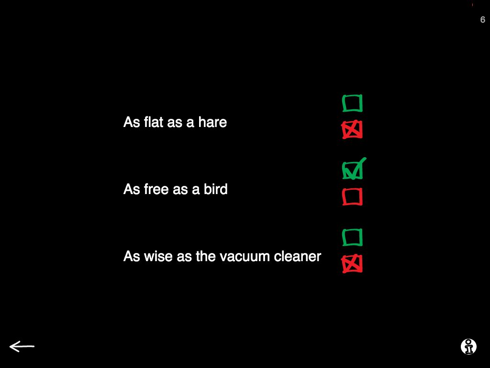
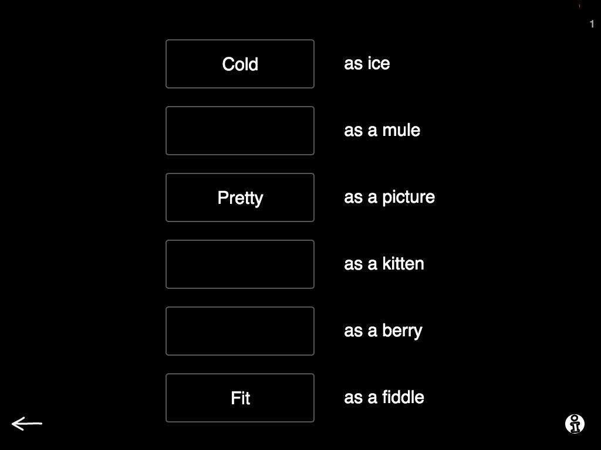

If you are a speech therapist and work with adults with acquired brain injury you are no stranger to difficulties in interpreting and processing figurative and more abstract language. Chances are you have used a metaphor or two with your patients too! I know I have worked my way trough a lot of worksheets of similes and metaphors with my patients, sometimes truthfully wondering why is this important? What is the gain from this exercise, how will this help my patient to navigate his daily life?
After a lot of time observing and working with patients and comparing notes with colleagues we were able to draw lines from working with similes to actually being more competent in communicating in everyday surroundings. And so much so that we decided to include some exercises with similes in Sanapsis! In our Semantics category you can find two exercises that make use of similes. Neither of them is the "Tell me what this simile means"-type of exercise per se, but there is no stopping you from using the material provided for that too.

Our Is this simile true -exercise challenges the patient to judge if the simile is true or false. Fairly straightforward, right? However, under the surface patients are
- working on understanding intentions behind the words
- doing feature analysis on everyday nouns
- working on judging the meaning of what they just heard
- communicating their opinion by making choices.

In addition to this, I like to take things a step forward and ask the patient to provide a suitable adjective or noun to transform the false similes into something that makes sense (like e.g. as loud as a vacuum cleaner), when applicable. And that, of course takes the exercise to a whole different level.
That new level can be explored further in our Complete the simile -exercise where the patient gets to fill in similes. Sanapsis provides the simile with a blank for the adjective and the patient gets to find a suitable word to match the noun provided. In the small black boxes you can find examples of suitable similes, but only the sky and verbal reasoning skills are the limit on what is accepted here! Yes, you guessed it right — in addition to working on generalizations and figurative language skills I always make my patients tell me exactly why they think their answer is a suitable one.

We chose to use similes for our exercises because they are rather simple and straightforward figures of speech. In addition to these exercises there are many things you can do to expand your repertoire in working with figurative language. With higher level patients one of my favorites is to take a passage from a book or a poem and ask the patient to locate and explain the figures of speech in that piece of text. And if you listen and look closely you will find that similes and metaphors are hiding all around us! Just think of that athlete who "flew like an arrow" in that competition or that sad girl "whose face was like stone" or even the cute little puppy who was "as sweet as a sugar plum".
In addition to the skills used in these tasks I like working with similes because they provide a good starting point to discussions about the abstract level of language. We often see patients who face the feeling of poor communication skills due to not being able to interpret and use figurative speech in their everyday communication, despite their fluent surface level communication skills. And this is where we can step in and start working on those skills in order to help the patients to understand their difficulties and overcome them in everyday situations.
As for now, it is your turn. I have hidden four everyday figures of speech in this post (not counting the ones used as examples) and I challenge you to locate them! Happy hunting!